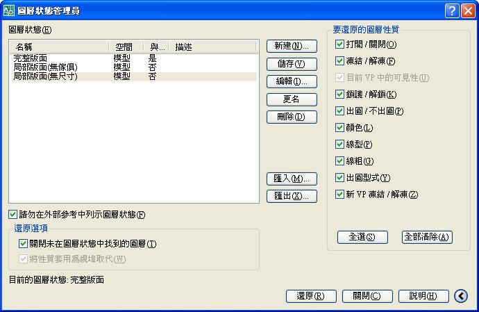

關於 AutoCAD 2008 圖層狀態管理員 LAYERSTATE 指令，可以將圖層設定儲存為具名圖層狀態，從其他圖面和檔案中還原、編輯、匯入圖層設定，以及匯出圖層設定以在其他圖面中使用。
簡單的說 圖面上的資訊 有時候只需要開啟 完整版面、局部版面(無傢俱)或局部版面(無尺寸)等等，此時可以建立這三種圖層狀態(記憶圖層開關)，就不需要反覆的開關圖層了。
https://www.youtube.com/watch?v=0wkF7aIcWYY
PS:若你只是想要新增的圖層來控制線的顏色形式，請使用LAYER指令即可。
------------------------------------------
補充：儲存、還原與編輯圖層狀態
您可以將目前的圖層設定儲存至圖層狀態，對圖層狀態進行變更，並在以後將其還原至圖面。
您可以將圖面中的目前圖層設定儲存為具名圖層狀態，並在以後還原。若要在完成圖面或出圖的不同階段中返回所有圖層的特定設定，儲存圖層設定會很方便。
您可以將目前的圖層設定儲存至圖層狀態，對圖層狀態進行變更，並在以後將其還原至圖面。
圖層設定包括圖層狀態 (例如打開或鎖護) 和圖層性質 (例如顏色或線型)。在具名圖層狀態中，您可以選擇在以後要還原的圖層狀態和圖層性質。例如，您可以選擇僅還原圖面中圖層的「凍結/解凍」設定，而忽略所有其它設定。還原此具名圖層狀態時，除了有關每個圖層是凍結還是解凍的設定以外，所有的設定將維持它們的目前設定。
還原圖層狀態時，將還原儲存圖層狀態時所指定的圖層設定 (圖層狀態和圖層性質)。您可以指定要在「圖層狀態管理員」中還原的特定設定。未選取的圖層性質設定在圖面中保持不變。
如果圖面包含自儲存圖層狀態後已加入的圖層，則您可以加入那些圖層。透過編輯圖層狀態與使用「選取要加入至圖層狀態的圖層」對話方塊，您可以選取想要加入至圖層狀態的圖層。
您可以從其他圖檔匯入圖層設定並匯出圖層狀態。
資料來源:AutoCAD 2008使用者說明